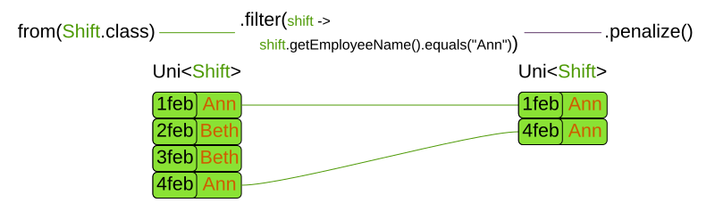
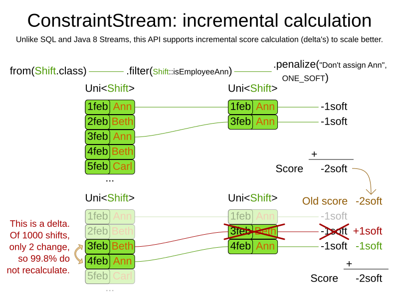
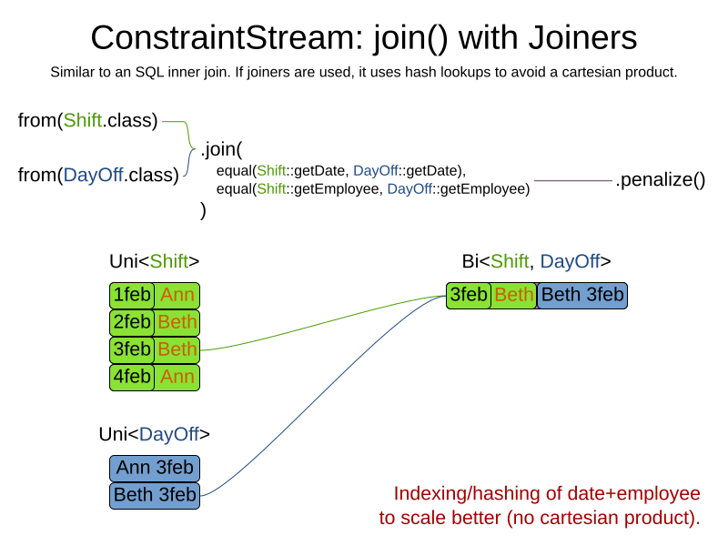
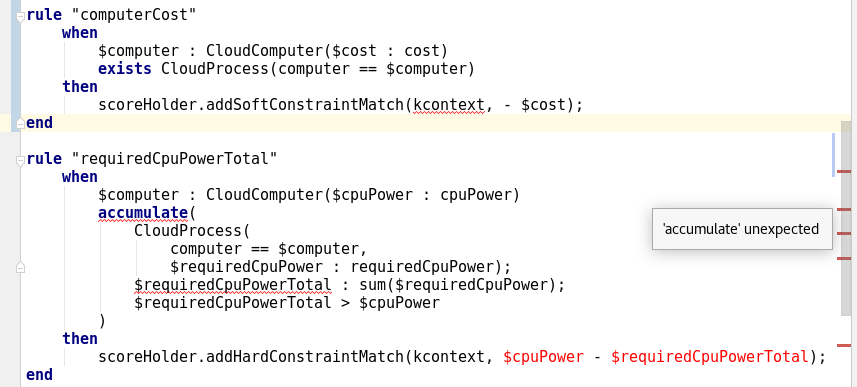
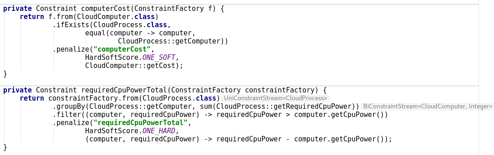
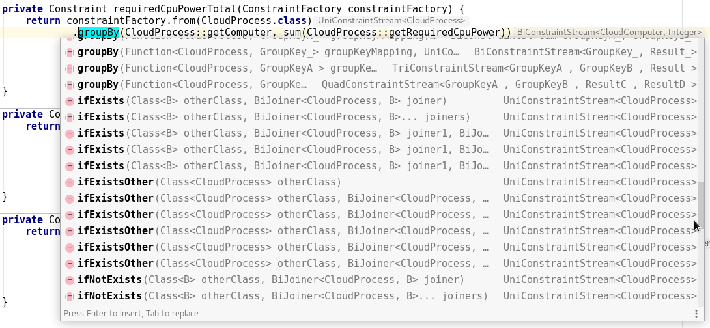
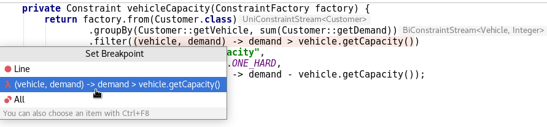
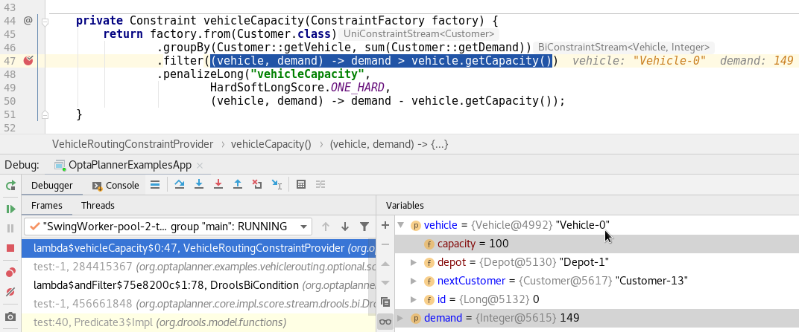
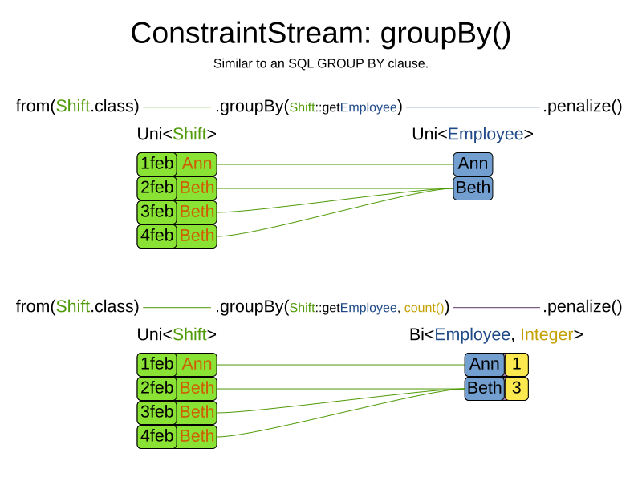

Constraint Streams – Modern Java constraints without the Drools Rule Language
Traditionally, to scale out with OptaPlanner,
you had to learn DRL. No more.
With the new Constraints Streams API, inspired by Java 8 Streams and SQL,
you can now write your constraints in Java (or Kotlin or Scala)
and still benefit from incremental calculation.
you had to learn DRL. No more.
With the new Constraints Streams API, inspired by Java 8 Streams and SQL,
you can now write your constraints in Java (or Kotlin or Scala)
and still benefit from incremental calculation.
Underneath, Constraints Streams (CS) still use the powerful Drools engine.
We also still fully support score DRLs too. They are not deprecated.
We also still fully support score DRLs too. They are not deprecated.
Let’s start with an example.
In nurse rostering, to avoid assigning shifts to employee
you would write this constraint in DRL:
In nurse rostering, to avoid assigning shifts to employee
Ann,you would write this constraint in DRL:
rule "Don't assign Ann"
when
Shift(getEmployee().getName() == "Ann")
then
scoreHolder.addSoftConstraintMatch(kcontext, -1);
end This is the same constraint in Java using Constraint Streams:
Constraint constraint = constraintFactory
.from(Shift.class)
.filter(shift -> shift.getEmployee().getName().equals("Ann"))
.penalize("Don't assign Ann", HardSoftScore.ONE_SOFT); If you’re familiar with SQL or Java 8 streams, this should look familiar.
Given a potential solution with four shifts (two of which are assigned to
those shifts flow through the Constraint Stream like this:
Given a potential solution with four shifts (two of which are assigned to
Ann),those shifts flow through the Constraint Stream like this:

This new approach to writing constraints has several benefits:
Incremental calculation
First off, unlike an
Constraint Streams still apply incremental score calculation to scale out, just like DRL.
For example, when a move swaps the employee of two shifts, only the delta is calculated.
That’s a huge scalability gain:
EasyScoreCalculator,Constraint Streams still apply incremental score calculation to scale out, just like DRL.
For example, when a move swaps the employee of two shifts, only the delta is calculated.
That’s a huge scalability gain:

Indexing
When joining multiple types, just like an SQL
Constraint Streams apply hash lookups on indexes to scale better:
JOIN operator,Constraint Streams apply hash lookups on indexes to scale better:

IDE support
Because ConstraintsStreams are written in the Java language,
they piggy-back on very strong tooling support.
they piggy-back on very strong tooling support.
Code highlighting, code completion and debugging just work:
Code highlighting
DRL code in IntelliJ IDEA Ultimate:

Java code using Constraint Streams in IntelliJ IDEA Ultimate, for the same constraints:

Code completion
Code completion for Constraint Streams:

Of course, all API methods have Javadocs.
Debugging
Add a breakpoint in ConstraintStream’s
filter():
To diagnose issues while debugging:

Java syntax
Constraints written in Java with Constraint Streams follow the Java Language Specification (JLS), for good or bad.
Similar logic applies when using Constraint Streams from Kotlin or Scala.
Similar logic applies when using Constraint Streams from Kotlin or Scala.
When migrating between DRL and Constraint Streams, be aware of some differences between DRL and Java:
- A DRL’s
==operator translates toequals()in Java. - Besides getters, DRL also allows MVEL expressions that translate into getters in Java.
For example, this DRL has
name and ==:rule "Don't assign Ann"
when
Employee(name == "Ann")
then ...
end But the Java variant for the exact same constraint has
getName() and equals() instead:constraintFactory.from(Employee.class)
.filter(employee -> employee.getName().equals("Ann"))
.penalize("Don't assign Ann", ...);Advanced functions
The Constraint Streams API allows us to add syntactic sugar
and powerful new concepts, specifically tailored to help you build complex constraints.
and powerful new concepts, specifically tailored to help you build complex constraints.
Just to highlight one of these, let’s take a look at the powerful
groupBy method:
Similar to an SQL
it support
and even custom functions, again without loss of incremental score calculation.
GROUP BY operator or a Java 8 Stream Collector,it support
sum(), count(), countDistinct(), min(), max(), toList()and even custom functions, again without loss of incremental score calculation.
Future work for Constraint Streams
First off, a big thanks to Lukáš Petrovický
for all his work on Constraints Streams!
for all his work on Constraints Streams!
But this is just the beginning.
We envision more advanced functions,
such as load balancing/fairness methods
to make such constraints easier to implement.
We envision more advanced functions,
such as load balancing/fairness methods
to make such constraints easier to implement.
Right now, our first priority is to make it easier to unit test constraints in isolation.
Think Test Driven Design. Stay tuned!
Think Test Driven Design. Stay tuned!
Author

This post was original published on here.